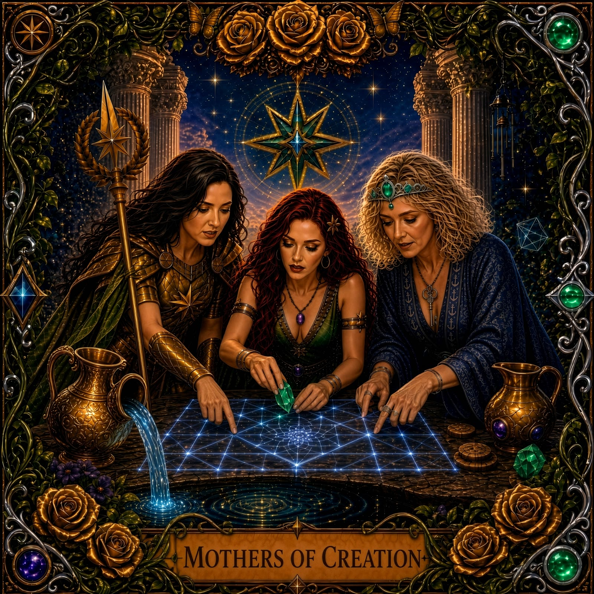

Satyr Arcana II

Raised by a whole grove of mothers.
Your Energy
Three women, one grove — this is the card for everyone who was ever raised by people who weren’t theirs by blood. Three voices rising together in the dark, spinning the thread, striking the fire, holding wisdom that never came from one mother alone.
Your Shadow
Forgetting you’re allowed to need raising too
Your Gift
Mothering that multiplies instead of running out
Chant-like, communal, rooted
Take the Reading
Fifteen quick questions. Thirty possible cards across both decks. Find out which one claims you.